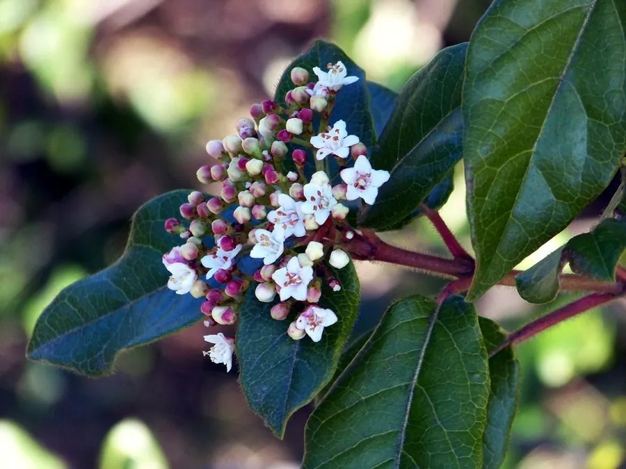

灌木与花木 · 植物界
地中海荚蒾 Viburnum tinus

忍冬科常绿灌木，冬季至春季开白色小花，花蕾粉红，耐修剪，是南方庭院与绿篱常见的优良观花灌木。
- 分类
- 门被子植物门纲木兰纲目川续断目科忍冬科属荚蒾属
- 栖息环境
- 地中海沿岸灌丛与庭院，喜光也耐半阴
- 地理分布
- 原产地中海沿岸；中国南方引种栽培
- 保护级别
- 暂无评估；中国未列入国家重点保护野生植物名录
物种志
地中海荚蒾为忍冬科荚蒾属常绿灌木，高 2–3 米，枝条密生，幼枝被星状毛。叶对生，卵形至椭圆形，革质，表面深绿色、有光泽，边缘具细锯齿。伞房状聚伞花序顶生，花小，花蕾粉红色，开放后白色，花期 12 月至翌年 4 月；果实为核果，椭圆形，成熟时蓝黑色，果期 8–9 月。
地中海荚蒾原产地中海沿岸，中国南方引种栽培，喜光，也耐半阴，耐寒性一般，适宜疏松肥沃、排水良好的土壤。它冬季至春季开花，花蕾粉红、花朵洁白，是南方庭院与绿篱常见的观花灌木；耐修剪，也可作造型植物。栽培以扦插繁殖为主，需注意防治蚜虫与白粉病，北方盆栽冬季需移入室内。
形态与习性
- 株高2–3 米，枝条密生
- 花期12 月至翌年 4 月
- 果期8–9 月，核果蓝黑色
- 光照喜光，也耐半阴
- 水分喜湿润，忌积水
- 土壤疏松肥沃、排水良好的土壤
- 主要用途庭院观花、绿篱与造型
趣味知识
- 地中海荚蒾在冬季至春季开花，是少花季节的重要观花灌木。
- 它的花蕾粉红色，开放后变成白色，色彩层次分明。
- 地中海荚蒾原产地中海沿岸，中国南方引种栽培。
- 它耐修剪，可作绿篱和造型植物。